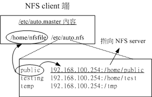

既然 NFS 服务器最主要的工作就是分享文件系统给网络上其他的客户端，所以客户端当然得要挂载这个玩意儿啰！
此外，服务器端可以加设防火墙来保护自己的文件系统，那么客户端挂载该文件系统后，难道不需要保护自己？
呵呵！所以底下我们要来谈一谈几个 NFS 客户端的课题。
 13.3.1 手动挂载 NFS
服务器分享的资源
13.3.1 手动挂载 NFS
服务器分享的资源
你要如何挂载 NFS 服务器所提供的文件系统呢？基本上，可以这样做：
- 确认本地端已经启动了 rpcbind 服务！
- 扫瞄 NFS 服务器分享的目录有哪些，并了解我们是否可以使用 (showmount)；
- 在本地端建立预计要挂载的挂载点目录 (mkdir)；
- 利用 mount 将远程主机直接挂载到相关目录。
好，现在假设客户端在 192.168.100.10 这部机器上，而服务器是 192.168.100.254 ，
那么赶紧来检查一下我们是否已经有 rpcbind 的启动，另外远程主机有什么可用的目录呢！
# 1. 启动必备的服务：若没有启动才启动，有启动则保持原样不动。
[root@clientlinux ~]# /etc/init.d/rpcbind start
[root@clientlinux ~]# /etc/init.d/nfslock start
# 一般来说，系统默认会启动 rpcbind ，不过鸟哥之前关闭过，所以要启动。
# 另外，如果服务器端有启动 nfslock 的话，客户端也要启动才能生效！
# 2. 查询服务器提供哪些资源给我们使用呢？
[root@clientlinux ~]# showmount -e 192.168.100.254
Export list for 192.168.100.254:
/tmp *
/home/linux *.centos.vbird
/home/test 192.168.100.10
/home/public (everyone) <==这是等一下我们要挂载的目录
|
接下来我想要将远程主机的 /home/public 挂载到本地端主机的 /home/nfs/public ，
所以我就得要在本地端主机先建立起这个挂载点目录才行啊！然后就可以用 mount
这个指令直接挂载 NFS 的文件系统啰！
# 3. 建立挂载点，并且实际挂载看看啰！
[root@clientlinux ~]# mkdir -p /home/nfs/public
[root@clientlinux ~]# mount -t nfs 192.168.100.254:/home/public \
> /home/nfs/public
# 注意一下挂载的语法！『 -t nfs 』指定文件系统类型，
# IP:/dir 则是指定某一部主机的某个提供的目录！另外，如果出现如下错误：
mount: 192.168.100.254:/home/public failed, reason given by server: No such file
or directory
# 这代表你在 Server 上面并没有建立 /home/public 啦！自己在服务器端建立他吧！
# 4. 总是得要看看挂载之后的情况如何，可以使用 df 或 mount 啦！
[root@clientlinux ~]# df
文件系统 1K-区段 已用 可用 已用% 挂载点
....(中间省略)....
192.168.100.254:/home/public
7104640 143104 6607104 3% /home/nfs/public
|
先注意一下挂载 NFS 档案的格式范例喔！呵呵！这样就可以将数据挂载进来啦！请注意喔！
以后，只要你进入你的目录 /home/nfs/public 就等于到了 192.168.100.254 那部远程主机的
/home/public 那个目录中啰！很不错吧！至于你在该目录下有什么权限？
那就请你回去前一小节查一查权限的思考吧！ ^_^ ！那么如何将挂载的 NFS 目录卸除呢？就使用 umount 啊！
[root@clientlinux ~]# umount /home/nfs/public
|
13.3.2
客户端可处理的挂载参数与开机挂载
瞧！客户端的挂载工作很简单吧！不过不晓得你有没有想过，如果你刚刚挂载到本机 /home/nfs/public
的文件系统当中，含有一支 script ，且这支 script 的内容为『 rm -rf / 』且该档案权限为 555 ，
夭寿～如果你因为好奇给他执行下去，可有的你受的了～因为整个系统都会被杀光光！真可怜！
所以说，除了 NFS 服务器需要保护之外，我们取用人家的 NFS 文件系统也需要自我保护才行啊！
那要如何自我保护啊？可以透过 mount 的指令参数喔！包括底下这些主要的参数可以尝试加入：
| 参数 | 参数代表意义 | 系统默认值 |
suid
nosuid | 晓得啥是 SUID 吧？如果挂载的 partition 上面有任何 SUID 的 binary 程序时，
你只要使用 nosuid 就能够取消 SUID 的功能了！嗄？不知道什么是 SUID ？那就不要学人家架站嘛！@_@！
赶紧回去基础学习篇第三版复习一下第十七章、程序与资源管理啦！ |
suid |
rw
ro | 你可以指定该文件系统是只读 (ro) 或可擦写喔！服务器可以提供给你可擦写，
但是客户端可以仅允许只读的参数设定值！ |
rw |
dev
nodev | 是否可以保留装置档案的特殊功能？一般来说只有 /dev
这个目录才会有特殊的装置，因此你可以选择 nodev 喔！ | dev |
exec
noexec | 是否具有执行 binary file 的权限？
如果你想要挂载的仅是数据区 (例如 /home)，那么可以选择 noexec 啊！ | exec |
user
nouser | 是否允许使用者进行档案的挂载与卸除功能？
如果要保护文件系统，最好不要提供使用者进行挂载与卸除吧！ | nouser |
auto
noauto | 这个 auto 指的是『mount -a』时，会不会被挂载的项目。
如果你不需要这个 partition 随时被挂载，可以设定为 noauto。 | auto |
一般来说，如果你的 NFS 服务器所提供的只是类似 /home 底下的个人资料，
应该不需要可执行、SUID 与装置档案，因此当你在挂载的时候，可以这样下达指令喔：
[root@clientlinux ~]# umount /home/nfs/public
[root@clientlinux ~]# mount -t nfs -o nosuid,noexec,nodev,rw \
> 192.168.100.254:/home/public /home/nfs/public
[root@clientlinux ~]# mount | grep addr
192.168.100.254:/home/public on /home/nfs/public type nfs (rw,noexec,nosuid,
nodev,vers=4,addr=192.168.100.254,clientaddr=192.168.100.10)
|
这样一来你所挂载的这个文件系统就只能作为资料存取之用，相对来说，对于客户端是比较安全一些的。
所以说，这个 nosuid, noexec, nodev 等等的参数可得记得啊！
除了上述的 mount 参数之外，其实针对 NFS 服务器，咱们的 Linux 还提供不少有用的额外参数喔！这些特殊参数还非常有用呢！
为什么呢？举例来说，由于文件系统对 Linux 是非常重要的东西，因为我们进行任何动作时，只要有用到文件系统，
那么整个目录树系统就会主动的去查询全部的挂载点。如果你的 NFS 服务器与客户端之间的联机因为网络问题，
或者是服务器端先关机了，却没有通知客户端，那么客户端只要动到文件系统的指令 (例如 df, ls, cp 等等)
，整个系统就会慢到爆！因为你必须要等到文件系统搜寻等待逾时后，系统才会饶了你！(鸟哥等过 df 指令 30 分钟过...)
为了避免这些困扰，我们还有一些额外的 NFS 挂载参数可用！例如：
| 参数 | 参数功能 | 预设参数 |
fg
bg | 当执行挂载时，该挂载的行为会在前景 (fg) 还是在背景 (bg) 执行？
若在前景执行时，则 mount 会持续尝试挂载，直到成功或 time out 为止，若为背景执行，
则 mount 会在背景持续多次进行 mount ，而不会影响到前景的程序操作。
如果你的网络联机有点不稳定，或是服务器常常需要开关机，那建议使用 bg 比较妥当。 | fg |
soft
hard | 如果是 hard 的情况，则当两者之间有任何一部主机脱机，则 RPC
会持续的呼叫，直到对方恢复联机为止。如果是 soft 的话，那 RPC 会在 time out 后『重复』呼叫，而非『持续』呼叫，
因此系统的延迟会比较不这么明显。同上，如果你的服务器可能开开关关，建议用 soft 喔！ |
hard |
| intr | 当你使用上头提到的 hard 方式挂载时，若加上 intr 这个参数，
则当 RPC 持续呼叫中，该次的呼叫是可以被中断的 (interrupted)。 | 没有 |
rsize
wsize | 读出(rsize)与写入(wsize)的区块大小 (block size)。
这个设定值可以影响客户端与服务器端传输数据的缓冲记忆容量。一般来说，
如果在局域网络内 (LAN) ，并且客户端与服务器端都具有足够的内存，那这个值可以设定大一点，
比如说 32768 (bytes) 等，提升缓冲记忆区块将可提升 NFS 文件系统的传输能力！
但要注意设定的值也不要太大，最好是达到网络能够传输的最大值为限。 |
rsize=1024
wsize=1024 |
更多的参数可以参考 man nfs 的输出数据喔！
通常如果你的 NFS 是用在高速运作的环境当中的话，那么可以建议加上这些参数的说：
[root@clientlinux ~]# umount /home/nfs/public
[root@clientlinux ~]# mount -t nfs -o nosuid,noexec,nodev,rw \
> -o bg,soft,rsize=32768,wsize=32768 \
> 192.168.100.254:/home/public /home/nfs/public
|
则当你的 192.168.100.254 这部服务器因为某些因素而脱机时，你的 NFS 可以继续在背景当中重复的呼叫！
直到 NFS 服务器再度上线为止。这对于系统的持续操作还是有帮助的啦！
当然啦，那个 rsize 与 wsize 的大小则需要依据你的实际网络环境而定喔！
Tips:
在鸟哥的实际案例中，某些大型的模式运算并不允许 soft 这个参数喔！举例来说，鸟哥惯用的 CMAQ 空气质量模式，
这个模式的丛集架构分享文件系统中，就不允许使用 soft 参数！这点需要特别留意喔！
|  |
我们知道开机就挂载的挂载点与相关参数是写入 /etc/fstab 中的，那 NFS 能不能写入 /etc/fstab 当中呢？非常可惜的是，
不可以呢！为啥呢？分析一下开机的流程，我们可以发现网络的启动是在本机挂载之后，因此当你利用 /etc/fstab 尝试挂载
NFS 时，系统由于尚未启动网络，所以肯定是无法挂载成功的啦！那怎办？简单！就写入 /etc/rc.d/rc.local 即可！
[root@clientlinux ~]# vim /etc/rc.d/rc.local
mount -t nfs -o nosuid,noexec,nodev,rw,bg,soft,rsize=32768,wsize=32768 \
192.168.100.254:/home/public /home/nfs/public
|
13.3.3 无法挂载的原因分析
如果客户端就是无法挂载服务器端所分享的目录时，到底是发生什么问题？你可以这样分析看看：
以上面的例子来说明，我的 /home/test 只能提供 192.168.100.0/24 这个网域，所以如果我在 192.168.100.254
这部服务器中，以 localhost (127.0.0.1) 来挂载时，就会无法挂载上，这个权限概念没问题吧！不然你可以在服务器上试试看：
[root@www ~]# mount -t nfs localhost:/home/test /mnt
mount.nfs: access denied by server while mounting localhost:/home/test
|
看到 access denied 了吧？没错啦～权限不符啦！如果确定你的 IP 没有错误，那么请通知服务器端，请管理员将你的 IP 加入
/etc/exports 这个档案中。
这个最容易被忘记了！就是忘记了启动 rpcbind 这个服务啦！如果你在客户端发现 mount 的讯息是这样：
[root@clientlinux ~]# mount -t nfs 192.168.100.254:/home/test /mnt
mount: mount to NFS server '192.168.100.254' failed: System Error: Connection refused.
# 如果你使用 ping 却发现网络与服务器都是好的，那么这个问题就是 rpcbind 没有开啦！
[root@clientlinux ~]# mount -t nfs 192.168.100.254:/home/test /home/nfs
mount: mount to NFS server '192.168.100.254' failed: RPC Error: Program not registered.
# 注意看最后面的数据，确实有连上 RPC ，但是服务器的 RPC 告知我们，该程序无注册
|
要嘛就是 rpcbind 忘记开 (第一个错误)，要嘛就是服务器端的 nfs 忘记开。最麻烦的是，
重新启动了 rpcbind 但是却忘记重新启动其他服务 (上述第二个错误)！解决的方法就是去重新启动 rpcbind
管理的其他所有服务就是了！
由于 NFS 几乎不对外开放，而内部网域又通常是全部的资源都放行，因此过去玩 NFS 的朋友 (包括鸟哥本人啦！)
都没有注意过 NFS 的防火墙问题。最近这几年鸟哥在管理计算机教室时，有掌管一部计算机教室主控防火墙，
为了担心太厉害的学生给鸟哥乱搞，因此该 Linux 防火墙预设是仅放行部分资源而已。但由于计算机教室的区网内需要用到
Linux 的 NFS 资源，结果呢？竟然没办法放行啊！原来就是 iptables 没有放行 NFS 所使用到的埠口～
所以，当你一直无法顺利的连接 NFS 服务器，请先到服务器端，将客户端的 IP 完全放行，若确定这样就连的上，
那代表就是防火墙有问题啦！怎么解决呢？上一小节介绍过了，参考将 NFS 服务器埠口固定的方式吧！
13.3.4 自动挂载 autofs 的使用
在一般 NFS 文件系统的使用情况中，如果客户端要使用服务器端所提供的 NFS 文件系统时，要嘛就是得在
/etc/rc.d/rc.local 当中设定开机时挂载，要嘛就得要登入系统后手动利用 mount 来挂载。
此外，客户端得要预先手动的建立好挂载点目录，然后挂载上来。但是这样的使用情况恐怕有点小问题。
我们知道 NFS 服务器与客户端的联机或许不会永远存在，而 RPC 这个服务又挺讨厌的，如果挂载了 NFS
服务器后，任何一方脱机都可能造成另外一方老是在等待逾时～而且，挂载的 NFS
文件系统可能又不是常常被使用，但若不挂载的话，有时候紧急要使用时又得通知系统管理员，
这又很不方便...啊！好讨厌的感觉啊～@_@
所以，让我们换个思考的角度来讨论一下使用 NFS 的情境：
- 可不可以让客户端在有使用到 NFS 文件系统的需求时才让系统自动挂载？
- 当 NFS 文件系统使用完毕后，可不可以让 NFS 自动卸除，以避免可能的 RPC 错误？
如果能达到上述的功能，那就太完美啦！有没有这东西呢？有的，在现在的 Linux 环境下这是可以达成的理想！用的就是
autofs 这个服务啦！
autofs 这个服务在客户端计算机上面，会持续的侦测某个指定的目录，
并预先设定当使用到该目录下的某个次目录时，将会取得来自服务器端的 NFS 文件系统资源，并进行自动挂载的动作。
讲这样或许你有点模糊，让我们拿底下这个图示来看看：

图 13.3-1、autofs 自动挂载的配置文件内容示意图
如上图所示，我们的 autofs 主要配置文件为 /etc/auto.master，这个档案的内容很简单，
如上所示，我只要定义出最上层目录 (/home/nfsfile) 即可，这个目录就是 autofs 会一直持续侦测的目录啦。
至于后续的档案则是该目录底下各次目录的对应。在 /etc/auto.nfs (这个档案的档名可自定义)
里面则可以定义出每个次目录所欲挂载的远程服务器的 NFS 目录资源！
举例来说：『当我们在客户端要使用 /home/nfsfile/public 的数据时，此时 autofs 才会去
192.168.100.254 服务器上挂载 /home/public ！』且『当隔了 5 分钟没有使用该目录下的数据后，则客户端系统将会主动的卸除
/home/nfsfile/public 』。
很不错用的一个工具吧！因为有用到服务器的数据时才自动挂载，没有使用了就会自动卸除！
而不是传统的情况一直是挂载的！既然这么好用，那就让我们实际来操演一下：
建立主配置文件 /etc/auto.master ，并指定侦测的特定目录
这个主要配置文件的内容很简单，只要有要被持续侦测的目录及『数据对应文件』即可。
那个数据对应文件的文件名是可以自行设定的，在鸟哥这个例子当中我使用 /etc/auto.nfs 来命名。
[root@clientlinux ~]# vim /etc/auto.master
/home/nfsfile /etc/auto.nfs
|
上述数据中比较需要注意的是，那个 /home/nfsfile 目录不需要存在，因为 autofs 会主动的建立该目录！
如果你建立了，可能反而会出问题～因此，先确定一下没有该目录吧！
建立数据对应文件内 (/etc/auto.nfs) 的挂载信息与服务器对应资源
刚刚我们所指定的 /etc/auto.nfs 是自行设定的，所以这个档案是不存在的。那么这个档案的格式是如何呢？你可以这样看：
[本地端次目录] [-挂载参数] [服务器所提供的目录]
选项与参数：
[本地端次目录] ：指的就是在 /etc/auto.master 内指定的目录之次目录
[-挂载参数] ：就是前一小节提到的 rw,bg,soft 等等的参数啦！可有可无；
[服务器所提供的目录] ：例如 192.168.100.254:/home/public 等
[root@clientlinux ~]# vim /etc/auto.nfs
public -rw,bg,soft,rsize=32768,wsize=32768 192.168.100.254:/home/public
testing -rw,bg,soft,rsize=32768,wsize=32768 192.168.100.254:/home/test
temp -rw,bg,soft,rsize=32768,wsize=32768 192.168.100.254:/tmp
# 参数部分，只要最前面加个 - 符号即可！
|
这样就可以建立对应了！要注意的是，那些 /home/nfsfile/public 是不需要事先建立的！
咱们的 autofs 会事情况来处理喔！好了，接下来让我们看看如何实际运作吧！
配置文件设定妥当后，当然就是要启动 autofs 啦！
[root@clientlinux ~]# /etc/init.d/autofs stop
[root@clientlinux ~]# /etc/init.d/autofs start
# 很奇怪！非常怪！CentOS 6.x 的 autofs 使用 restart 会失效！所以鸟哥才进行两次
|
假设你目前并没有挂载任何来自 192.168.100.254 这部 NFS 服务器的资源目录。好了，
那让我们实际来观察看看几个重要的数据吧！先看看 /home/nfsfile 会不会主动的被建立？
然后，如果我要进入 /home/nfsfile/public 时，文件系统会如何变化呢？
[root@clientlinux ~]# ll -d /home/nfsfile
drwxr-xr-x. 2 root root 0 2011-07-28 00:07 /home/nfsfile
# 仔细看，妳会发现 /home/nfsfile 容量是 0 喔！那是正常的！因为是 autofs 建立的
[root@clientlinux ~]# cd /home/nfsfile/public
[root@clientlinux public]# mount | grep nfsfile
192.168.100.254:/home/public on /home/nfsfile/public type nfs (rw,soft,rsize=32768,
wsize=32768,sloppy,vers=4,addr=192.168.100.254,clientaddr=192.168.100.10)
# 上面的输出是同一行！瞧！突然出现这个玩意儿！因为是自动挂载的嘛！
[root@clientlinux public]# df /home/nfsfile/public
文件系统 1K-区段 已用 可用 已用% 挂载点
192.168.100.254:/home/public
7104640 143104 6607040 3% /home/nfsfile/public
# 档案的挂载也出现没错！
|
呵呵！真是好啊！如此一来，如果真的有需要用到该目录时，系统才会去相对的服务器上面挂载！
若是一阵子没有使用，那么该目录就会被卸除呢！这样就减少了很多不必要的使用时机啦！还不错用吧！ ^_^